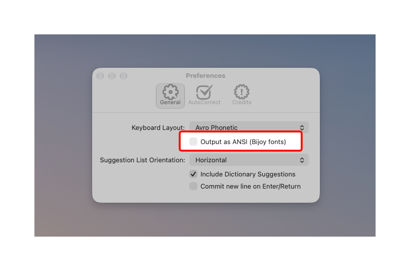
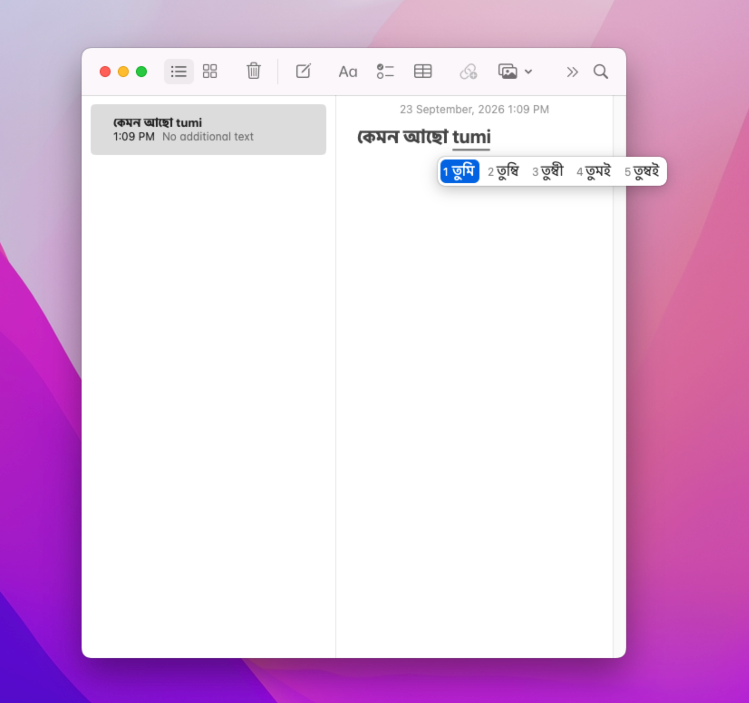
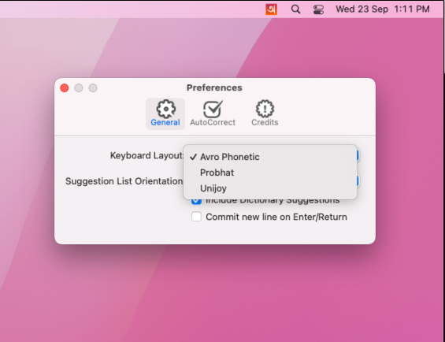
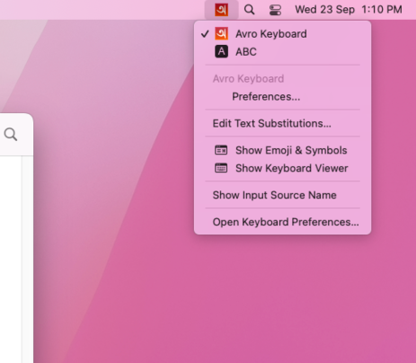
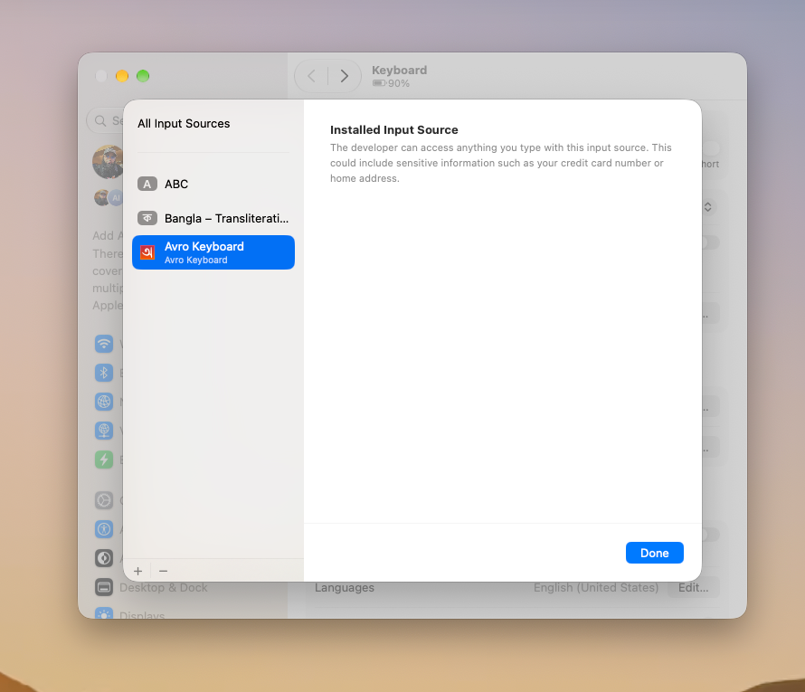
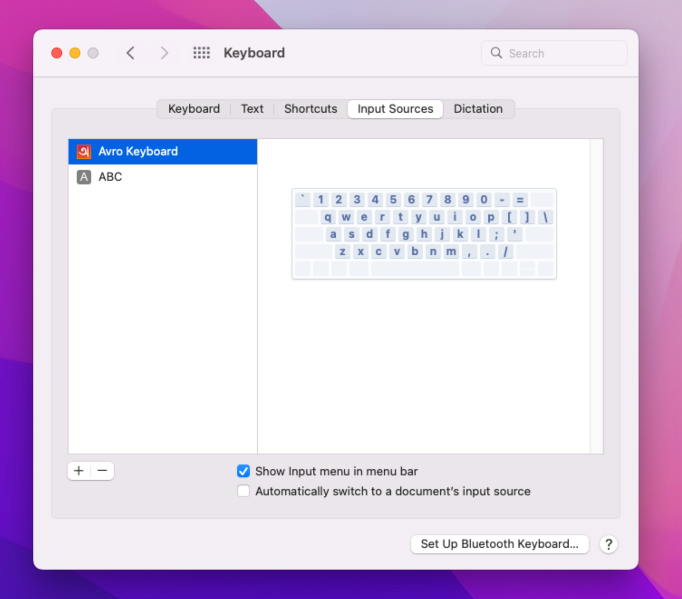

চেনা লেআউট, ম্যাকের জন্য তৈরি।
উইন্ডোজ ও লিনাক্সের অভ্র ফোনেটিক লেআউট, এবার পূর্ণাঙ্গ macOS ইনপুট সোর্স হিসেবে।
অভ্র ফোনেটিক লেআউট
মূল অভ্র কিবোর্ডের একই ট্রান্সলিটারেশন নিয়ম, তাই হাতের অভ্যাস বদলাতে হবে না। প্রভাত ও ইউনিজয়ও সঙ্গেই আছে।
ক্যান্ডিডেট উইন্ডো
লেখার সময় বিকল্প বানান দেখায়; অ্যারো কি দিয়ে একটি বেছে নিন। আনুভূমিক বা উল্লম্ব প্যানেল।
ডিকশনারি সাজেশন
চাইলে ডিকশনারি থেকে আসল শব্দগুলো ফোনেটিক ক্যান্ডিডেটের পাশে দেখায়।
অটো-কারেক্ট ও অটো-ডিকশনারি
সাধারণ ভুল শুধরে দেয়, আর একটি ব্যক্তিগত ডিকশনারি আপনার বেছে নেওয়া শব্দ মনে রাখে।
নেটিভ Swift
Apple-এর Input Method Kit-এর ওপর নতুন করে লেখা। CocoaPods নেই, বাড়তি লাইব্রেরি নেই; SQLite আসে সিস্টেম থেকে।
ইউনিভার্সাল বিল্ড
প্রতিটি রিলিজে CI তৈরি করে Apple Silicon, Intel ও ইউনিভার্সাল বাইনারি, সার্টিফিকেট থাকলে সাইন ও নোটারাইজ করা।
তিনটি কিবোর্ড লেআউট
ফোনেটিকভাবে লিখুন, অথবা আপনার চেনা ফিক্সড লেআউট ব্যবহার করুন। যেকোনো সময় বদলান Preferences… → Keyboard Layout থেকে।
অভ্র ফোনেটিক
যেমন উচ্চারণ তেমন ইংরেজি হরফে বাংলা লিখুন: ami হয়ে যায় আমি।
ডিফল্ট লেআউট। ক্যান্ডিডেট, ডিকশনারি সাজেশন ও অটো-কারেক্ট এই লেআউটে কাজ করে।
প্রভাত
প্রতিটি কি সরাসরি একটি বাংলা অক্ষর লেখে: k ক, v আ, / হসন্ত।
উইন্ডোজের অভ্র কিবোর্ডের প্রভাতের মতোই কি-ম্যাপ।
ইউনিজয়
বিজয়-ধাঁচের লেআউট: j ক, f া, g হসন্ত।
কার-চিহ্নের আগে g চাপলে পূর্ণ স্বরবর্ণ হয়: g f → আ। দৃশ্যমান হসন্তের জন্য g দুবার চাপুন।
ANSI (বিজয়) আউটপুট
ইউনিকোডের বদলে SutonnyMJ সহ অন্যান্য বিজয় ফন্টের পুরনো বিজয় এনকোডিংয়ে লিখুন। চালু করুন Preferences… → Output as ANSI (Bijoy fonts)।
তিনটি লেআউটেই কাজ করে, রূপান্তর উইন্ডোজের অভ্র কিবোর্ডের মতোই। ডকুমেন্টে একটি বিজয় ফন্ট সেট করুন, নইলে লেখা ইংরেজি অক্ষরের মতো দেখাবে।
- অভ্র ফোনেটিক: ক্যান্ডিডেট বার থেকে বেছে নেওয়া শব্দটি বসানোর সময়েই রূপান্তরিত হয়।
- প্রভাত ও ইউনিজয়: যে শব্দটি লিখছেন সেটি আন্ডারলাইন করা থাকে, বিজয়েই দেখায়, যতক্ষণ না স্পেস, Return বা লেআউটের বাইরের অন্য কোনো কি চাপছেন।
- শব্দ আন্ডারলাইন থাকা অবস্থায় Delete চাপলে শেষ চাপা কি-টি মুছে যায়।
{kind=link}

macOS যেখানে আশা করে, ঠিক সেখানেই।
একটি সাধারণ ইনপুট সোর্স: থাকে ইনপুট মেনুতে, আর সাজেশন দেখায় আপনি যা লিখছেন তার নিচেই।
{kind=link}

tumi লিখে ক্যান্ডিডেট বার থেকে তুমি বা অন্য কোনো বানান বেছে নিন।{kind=link}

{kind=link}

যেভাবেই করুন, এক মিনিটের কাজ।
Homebrew ব্যবহার করুন, অথবা DMG ডাউনলোড করে ডাবল-ক্লিক করুন।
আগে মূল iAvro সরিয়ে ফেলুন
আগে মূল iAvro (com.omicronlab.inputmethod.AvroKeyboard) ইনস্টল করা থাকলে সেটি সরিয়ে ফেলুন, নইলে ইনপুট মেনুতে দুটি Avro Keyboard দেখাবে এবং macOS হয়তো পুরনোটিই চালু করতে থাকবে।
- System Settings → Keyboard → Input Sources → Edit… থেকে Avro Keyboard সরিয়ে দিন।
~/Library/Input Methodsঅথবা/Library/Input MethodsথেকেAvro Keyboard.appমুছে ফেলুন (Finder-এ ⌘ ⇧ G চেপে পাথটি পেস্ট করুন)।- লগ আউট করে আবার লগ ইন করুন, তারপর নিচের নিয়মে ইনস্টল করুন। পুরনো ব্যক্তিগত ডিকশনারি ও সেটিংস নতুনটিতে আসে না।
Homebrew দিয়ে
$ brew install --cask aminulbd/tap/avroঅ্যাপটি ~/Library/Input Methods-এ ইনস্টল হয়। পরে আপডেট করুন brew upgrade --cask avro দিয়ে, সরাতে brew uninstall --cask avro। তারপর মেনু বারের ইনপুট মেনু থেকে এটি বেছে নিন।
ম্যানুয়ালি
- DMG ডাউনলোড করুনসর্বশেষ রিলিজ থেকে
Avro-Keyboard-universal.dmgনিন। ছোট ফাইল চাইলেapple-siliconওintelবিল্ডও আছে। - খুলে Install চাপুনDMG খুলে Avro Keyboard-এ ডাবল-ক্লিক করুন। এটি নিজেকে
~/Library/Input Methods-এ (শুধু আপনার ইউজারের জন্য) কপি করে ইনপুট সোর্সে যুক্ত করে। - লেখা শুরু করুনমেনু বারের ইনপুট মেনু থেকে, অথবা ⌃ Space চেপে এটি বেছে নিন।
{kind=link}

{kind=link}

সমর্থিত macOS সংস্করণ
macOS 12 Monterey ও তার পরের সব সংস্করণে চলে, Apple Silicon (M1, M2, M3, M4 ও পরবর্তী) এবং Intel দুই ধরনের ম্যাকেই, একটিমাত্র ইউনিভার্সাল বিল্ড থেকে। macOS 11 Big Sur ও তার আগের সংস্করণ সমর্থিত নয়।
- macOS 27Golden GateApple Silicon
- macOS 26TahoeApple Silicon · Intel
- macOS 15SequoiaApple Silicon · Intel
- macOS 14SonomaApple Silicon · Intel
- macOS 13VenturaApple Silicon · Intel
- macOS 12MontereyApple Silicon · Intel
সোর্স থেকে বিল্ড করুন।
Xcode 16 বা পরবর্তী সংস্করণ লাগবে। বাইরের কোনো ডিপেন্ডেন্সি নেই।
Xcode-এ AvroKeyboard.xcodeproj খুলে Avro Keyboard স্কিম বিল্ড করুন, অথবা কমান্ড লাইন ব্যবহার করুন।
বিল্ড করা অ্যাপ পাবেন build/Build/Products/Release/Avro Keyboard.app-এ।
বান্ডল আইডেন্টিফায়ার: app.aminul.inputmethod.AvroKeyboard
$ git clone https://github.com/AminulBD/iAvro.git
$ cd iAvro
$ xcodebuild -project AvroKeyboard.xcodeproj \
-scheme "Avro Keyboard" \
-configuration Release \
-derivedDataPath buildসবকিছু রিপোজিটরিতেই আছে।
কাজের লিংকগুলো এখানে।
- READMEইনস্টলেশন, বিল্ড, এবং CI ও রিলিজের পূর্ণ নির্দেশিকা।↗
- রিলিজপ্রতিটি ট্যাগ করা সংস্করণের DMG ইনস্টলার ও zip করা অ্যাপ, রিলিজ নোটসহ।↗
- সাইনিং ও নোটারাইজেশনকোন রিপোজিটরি সিক্রেট থাকলে CI Developer ID দিয়ে সাইন করা, নোটারাইজ করা বিল্ড তৈরি করে।↗
- CI বিল্ডযেকোনো কমিটের আর্টিফ্যাক্ট পেতে Build ওয়ার্কফ্লো নিজে চালান।↗
- ইস্যুবাগ, ভুল ট্রান্সলিটারেশন, নতুন ফিচারের অনুরোধ।↗
- আপস্ট্রিম প্রজেক্টরিফাত নবীর মূল iAvro রিপোজিটরি, যার ওপর এই ফর্কটি তৈরি।↗
অনেক মানুষের কাজের ওপর দাঁড়িয়ে।
ম্যাকে অভ্র কিবোর্ড আছে তাঁদের জন্যই। এই ফর্কটি তাঁদের কাজের ওপরই দাঁড়িয়ে।

রিফাত নবী
২০১২ সালে iAvro তৈরি করেন, OS X-এর জন্য অভ্র কিবোর্ডের প্রথম পোর্ট, এবং Yosemite, Sierra ও তার পরেও বহু বছর এটি রক্ষণাবেক্ষণ করেন।

আমিনুল ইসলাম
অ্যাপটি Swift-এ নতুন করে লিখেছেন, CocoaPods বাদ দিয়েছেন, DMG প্যাকেজিংসহ Apple Silicon ও Intel ইউনিভার্সাল বিল্ড যোগ করেছেন, এবং GitHub Actions দিয়ে সাইন ও নোটারাইজ করা রিলিজের ব্যবস্থা করেছেন।
আরও কৃতজ্ঞতা
- OmicronLab ও মেহদী হাসান খান, অভ্র ফোনেটিক লেআউট ও ইঞ্জিনের নির্মাতা।
- সারিম খান ও মুহাম্মদ মমিনুল হক, iAvro-র কন্ট্রিবিউটর।
- বছরের পর বছর যাঁরা ইস্যু জানিয়েছেন ও বিল্ড পরীক্ষা করেছেন, তাঁদের সবাই।
বাংলায় লেখা শুরু করুন।
ফ্রি, ওপেন সোর্স ও ইউনিভার্সাল। এক মিনিটেই ইনস্টল করুন।